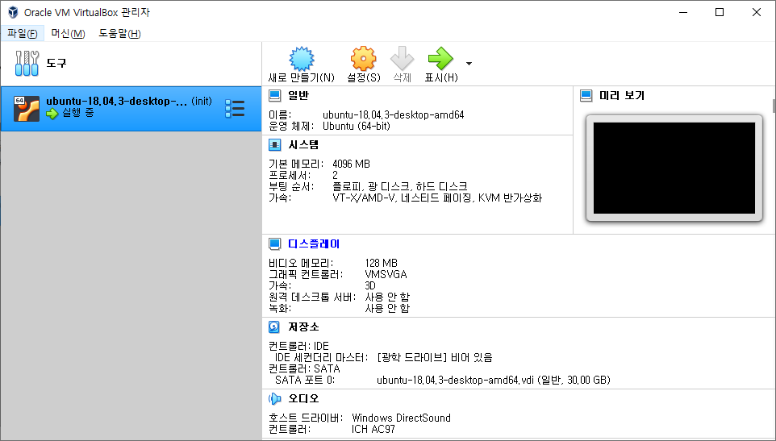
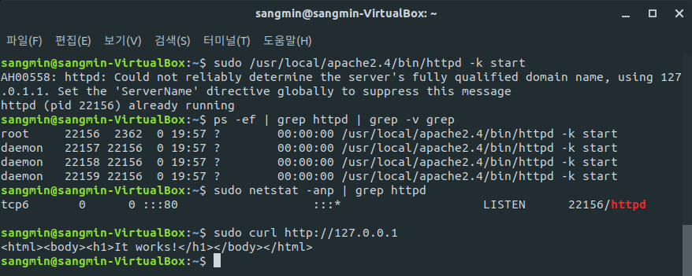

컴파일 설치를 하는 이유
소프트 스퀘어드에서 내준 첫 과제는 서버를 구축하는 것 이다. 단순히 Linux에 Apache / PHP / MySQL (이하 APM) 세 가지만 깔면 된다고 해서 쉬운 과제일 줄 알았는데, package manager를 사용하지 않고 컴파일 설치만을 요구했다. 그렇다면 왜 컴파일 설치를 해야 하는지 알아보도록 하자.
Ubuntu를 예로 들면 apt 혹은 apt-get이라는 패키지 매니저가 있다. 패키지 매니저를 통해 프로그램을 설치하게 되면 OS 종류나 버전에 맞춰 의존성 있는 프로그램들도 같이 설치해준다. 개인적인 목적으로 설치하는 프로그램인 경우에는 패키지 매니저를 이용해 쉽게 설치하면 되나, 회사에서 업무적인 목적으로 설치하는 경우 이것을 막을 수도 있다. 첫 과제 이후로는 컴파일 설치를 안해도 된다 하니 CLI 명령어를 다시 익힐 겸 설치를 시도했다.
Virtual Box + Ubuntu 18.04 설치
운영체제 수업 때 리눅스 사용을 마지막으로 한동안 안써왔는데 삭제하지 않길 잘했다. 가상 환경으로 VM VirtualBox를, Ubuntu는 18.04 버전을 사용했다. 
Apache 2.4.46 컴파일 설치
컴파일 설치 관례
- /usr/local에 설치
- 소스 파일은 /usr/local/src에 보관
$ ./configure
$ make && make install
의존성 패키지(APR, PCRE) 설치
- APR (Apache Portable Runtime)
- PCRE (Perl Compatible Regular Expressions)
$ sudo su
$ cd usr/local
$ mkdir apache
/usr/local에 apr과 apr-util 설치
- wget : 웹 서버로부터 콘텐츠를 가져오는, 쉽게 말해 파일을 다운받는다.
- tar xvfz :
tar.gz압축을 한 번에 풀어준다. - make : 소스를 컴파일한다.
- make install : make를 통해 만들어진 설치 파일을 설치하는 과정이다.
# 필수 설치
$ apt-get install gcc zlibc zlib1g zlib1g-dev libssl-dev openssl \
libxml2-dev ncurses-dev libexpat1-dev
$ wget http://mirror.navercorp.com/apache//apr/apr-1.7.0.tar.gz
$ wget http://mirror.navercorp.com/apache//apr/apr-util-1.6.1.tar.gz
$ tar xvfz apr-1.7.0.tar.gz
$ tar xvfz apr-util-1.6.1.tar.gz
$ cd usr/local/apr-1.7.0
$ ./configure --prefix=/usr/local/apr
$ make && make install
$ cd usr/local/apr-util-1.6.1
$ ./configure --prefix=/usr/local/apr-util --with-apr=/usr/local/apr
$ make && make install
/usr/local에 pcre 설치
$ cd usr/local
$ wget ftp://ftp.pcre.org/pub/pcre/pcre-8.43.tar.gz
$ tar xvfz pcre-8.43.tar.gz
$ cd usr/local/pcre-8.43
$ ./configure --prefix=/usr/local/pcre
$ make && make install
Apache 2.4.46 설치
$ cd /usr/local
$ wget http://apache.tt.co.kr//httpd/http-2.4.46.tar.gz
$ tar xvfz httpd-2.4.46.tar.gz
$ cd httpd-2.4.46
$ ./configure --prefix=/usr/local/apache2.4 \
--enable-module=so --enable-rewrite --enable-so \
--with-apr=/usr/local/apr \
--with-apr-util=/usr/loacl/apr-util \
--with-pcre=/usr/local/pcre \
--enable-mods-shared=all
$ make && make install
Apache 실행
- 실행 : httpd -k start
- 종료 : httpd -k stop
$ sudo /usr/local/apache2.4/bin/httpd -k start
$ ps -ef | grep httpd | grep -v grep
$ sudo netstat -anp | grep httpd
$ sudo curl http://127.0.0.1

위의 사진처럼 Apache가 정상적으로 실행된 모습을 볼 수 있다.